GeoServer 3
Der große technische Umbau
FOSSGIS 2026
Agenda
- GeoServer im Überblick
- Warum GeoServer 3?
- Der Weg zu GeoServer 3
- Was ist (wirklich) neu?
- Migration von 2.x → 3.x
- Fazit & Ausblick
Was ist GeoServer?
- Open-Source-Server für Geodaten (Java)
- Referenzimplementierung für OGC-Standards
- WMS, WFS, WCS, WMTS, WPS, OGC-API
- Web-Admin-Oberfläche, REST-API
- Plugin-Architektur, große Community
Kernfunktion
Datenquellen
- PostGIS, Oracle, SQL Server
- GeoTIFF, GeoPackage, Shapefile
- Cloud Optimized GeoTIFF
- WMS/WFS Cascading
Ausgabe
- OGC-Dienste
(WMS, WFS, …) - GeoWebCache / Tile-Caching
- SLD / CSS Styling
- REST-API für Automatisierung
GeoServer
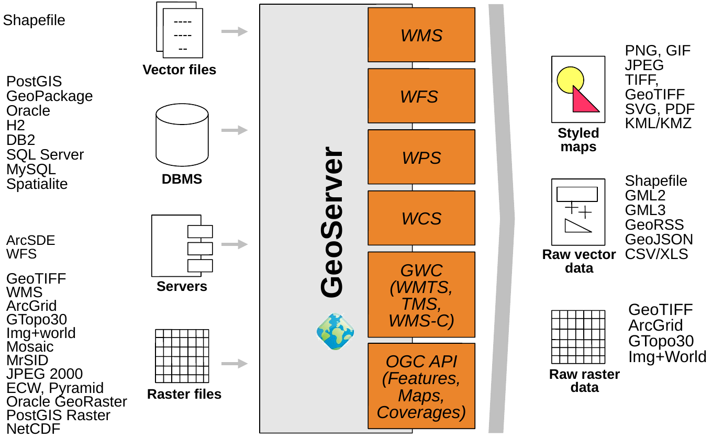
Warum GeoServer 3?
- Technische Modernisierung der Plattform
- Java 17/21 – Ende des Java 8/11 Support
- LTS-Support für Spring 5 in 2025 bereits abgelaufen
→ Migration zu Spring 6/7 dringend nötig - Kompatibilität zu Tomcat 11/Jetty 12/Jakarta EE schaffen
- Unterstützung für moderne Security-Integrationen
- Ersatz der veralteten Java Advanced Imaging (JAI) Bibliothek
- Technische Schulden abbauen
- Zukunftsfähigkeit sichern
- Kein klassisches Feature-Release, sondern Plattformupgrade
Der Weg zu GeoServer 3
- Sep 2024: Call for Crowdfunding
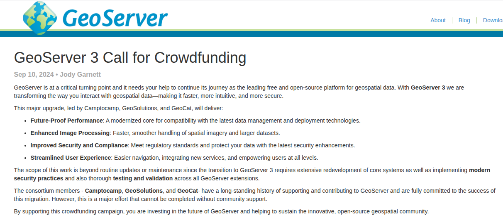
Der Weg zu GeoServer 3

Der Weg zu GeoServer 3
- Mai 2025: Finanzierungsziel übertroffen!
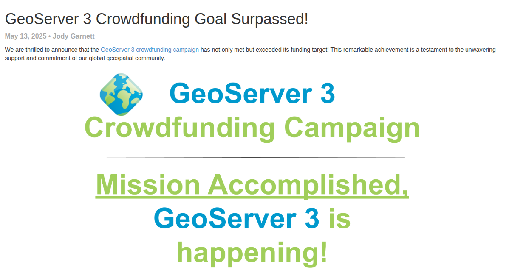
Crowdfunding
- Ziel: 550.000 €
- Start mit je 50.000 € aus 3er-Konsortium:
- Camptocamp
- GeoSolutions
- GeoCat
- 30+ Sponsoren weltweit
- Ziel übertroffen


Sponsoren
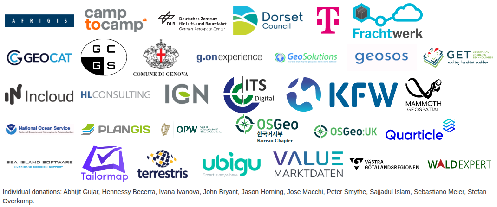
Der Weg zu GeoServer 3
- Okt 2025: Community Code Sprint in Italien
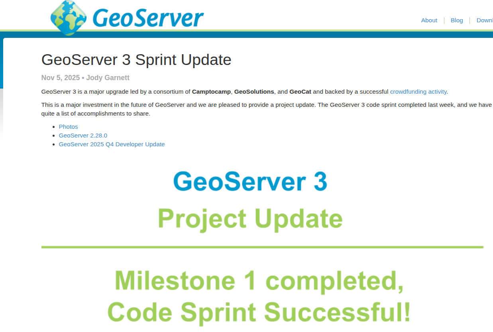
Zusammenfassung
| Wann | Was |
|---|---|
| Jan 2024 | Roadmap 2024 |
| Sep 2024 | Crowdfunding-Start |
| Jan 2025 | Finanzierungsziel bei 80% |
| Apr 2025 | Final Call (~90%) |
| Mai 2025 | Finanzierungsziel bei > 100% |
| Okt 2025 | Community Codesprint |
| Apr 2026 | Offizielles Release |
Viel Arbeit...
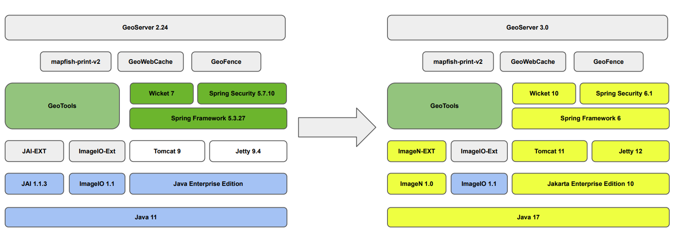
Der Plan

Quelle: GeoServer 3 Crowdfunding
Spring & Jakarta EE
- "Spring" ist vom GeoServer genutzte Kernbibliothek
- Auslöser einer Lawine und Antreiber für GeoServer 3:
- Kein LTS-Support mehr für Spring 5
- Upgrade auf Spring 6 / 7 zwingend nötig!
- Infolgedessen neue Minimalanforderungen:
- Java 17+
- Servlet Container: Tomcat 10+ / Jetty 11+
- Spring Security 6 / 7
- Code-Refactoring, das auch bei eigenen Extensions nötig wäre
- Namespace-Wechsel:
javax.*→jakarta.*
// GeoServer 2.x
import javax.servlet.http.HttpServletRequest;
// GeoServer 3
import jakarta.servlet.http.HttpServletRequest;Die Spring-Lawine

Quelle: GeoServer 3 Crowdfunding
Java 17
- Erfordert Umstieg auf Wicket 10 (Web-UI)
- Führt zu Inkompatibilität mit Java Advanced Imaging (JAI)
→ Erfordert Umstieg auf ImageN - Kompatibilität zu anderen Abhängigkeiten muss sichergestellt werden (GeoTools, etc.)
- Seit GeoServer 2.28.x ist Java 17 bereits zwingend gefordert!

Von JAI zu ImageN
- Java Advanced Imaging (JAI) 1.1.3 – letzte Aktualisierung ~2006
- Inkompatibel mit Java 17+
- Eclipse ImageN als moderner OpenSource-Nachfolger
- Der alte JAI-Code wurde dafür von Oracle gespendet!
- Bessere Performance bei Raster-Daten
- Aktiv gepflegt, kompatibel mit aktuellen JVMs
- Bereits ab GeoServer 2.28.x im Einsatz
Spring Security
- Upgrade von Spring Security 5 auf 7
- Strengere Validierung und neue Defaults
- Führt zu Inkompatibilität der OAuth2 Security Extension des GeoServers
- Erfordert komplette Überarbeitung der Erweiterung: OAuth2 → OIDC (OpenID Connect)

Technologien
| Komponente | GS 2.26.x | GS 2.27.x | GS 2.28.x | GS 3.0.0 |
|---|---|---|---|---|
| Java | 11 / 17 | 11 / 17 | 17 / 21 | 17 / 21 |
| Bildverarbeitung | JAI / JAI-Ext | JAI / JAI-Ext | Eclipse ImageN | Eclipse ImageN |
| Spring | 5.3 | 5.3 | 5.3 | 7.0 |
| Spring Security | 5.8 | 5.8 | 5.8 | 7.0 |
| Servlet Container | javax.* Tomcat 9 Jetty 9 / 10 | javax.* Tomcat 9 Jetty 9 / 10 | javax.* Tomcat 9 Jetty 9 / 10 | jakarta.* Tomcat 10+ Jetty 11+ |
| Web-UI | Wicket 7 | Wicket 9 | Wicket 9 | Wicket 10 |
Migration 2.x → 3.x
Überblick der Breaking Changes
| Bereich | Auswirkung |
|---|---|
| Servlet-Container | - Infrastruktur-Update (Tomcat 10+ / Jetty 11+) - Anpassungen in eigenem Plugin-Code ( javax -> jakarta))- ggf. zu prüfen: sehr spezifische Server-Konfigurationen |
| Java 17+ | - Infrastruktur-Update - ggf. Anpassungen in eigenem Plugin-Code |
| OAuth2 → OIDC | - Aktualisierung/Umstieg auf GeoServer OIDC Extension |
| Spring 7 | - Anpassungen nur bei eigenem Plugin-Code |
| javax → jakarta | - Anpassungen nur bei eigenem Plugin-Code |
| JAI → ImageN | - Anpassungen nur bei eigenem (Raster-)Plugin-Code |
Migration 2.x → 3.x
Code & Extensions
- Alle eigenen Extensions müssen neu kompiliert werden
- OpenRewrite für automatisierte Jakarta-Migration
- Java 17+ oder Spring 7 API-Änderungen
→ manuelles Nacharbeiten - Community-Module: passende Source-Builds nötig
- GeoFence-Migration noch in Arbeit (Milestone 3)
Migration 2.x → 3.x
Konfiguration
- Data Directory: Struktur bleibt kompatibel
security/masterpw.infowird nicht mehr generiert- Umgebungsvariablen weiterhin unterstützt
- Neue Application Properties:
ROOT_LOGIN_ENABLEDGEOSERVER_NODE_OPTS(Git Branch)
- Data-Dir-Catalog-Loader → Core
Migrations-Checkliste
- ☐ Java 17+ installieren
- ☐ Servlet-Container aktualisieren (Tomcat 10+)
- ☐ Data Directory sichern & testen
- ☐ Tiling & Caching-Szenarien testen
- ☐ High-Volume-Tests durchführen
Falls genutzt:- ☐ Raster-Workflows auf Basis von ImageN validieren
- ☐ OAuth2-Konfiguration auf OIDC umstellen
In Code eigenen Extensions:- ☐ OpenRewrite für
javax.*→jakarta.* - ☐ Spring 7 API-Änderungen ggf. manuell nacharbeiten
- ☐ OpenRewrite für
CITE-Zertifizierung wiederhergestellt
- Erstmals seit ~10 Jahren wieder zertifiziert
- WFS 2.0, WMS 1.3, WCS 2.0, WMTS 1.0, OGC API Features/Tiles
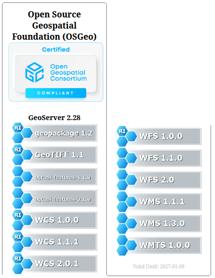
Multi-Architecture Docker Images
- Support für AMD64 & ARM64 Umgebungen
- Noch in der Umsetzung
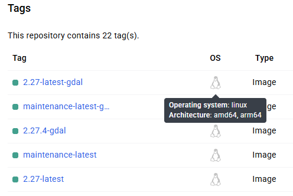
CORS-Settings in Admin-UI
- CORS-Support nativ konfigurierbar über Admin-UI
- Ersetzt bisherige manuelle Filter-Konfiguration in der
web.xml - Security → CORS
- Obacht: Kann mit Docker Image in Konflikt geraten -> Potentielles TODO für Migration Guide
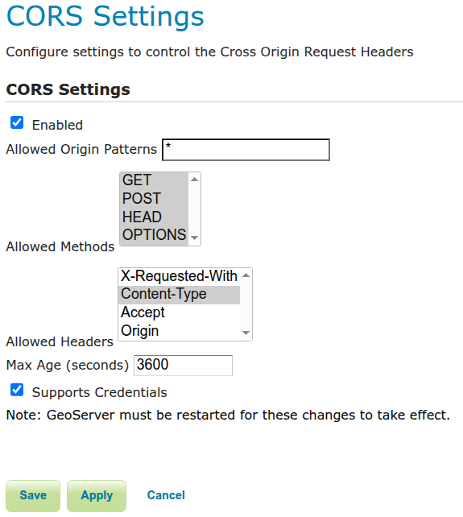
Dokumentation mit MkDocs
- Migration der Dokumentation zu Markdown
- Verbesserte Lesbarkeit, einfachere Wartung
- Vorschau: https://docs-test.geoserver.org/3.0.x/
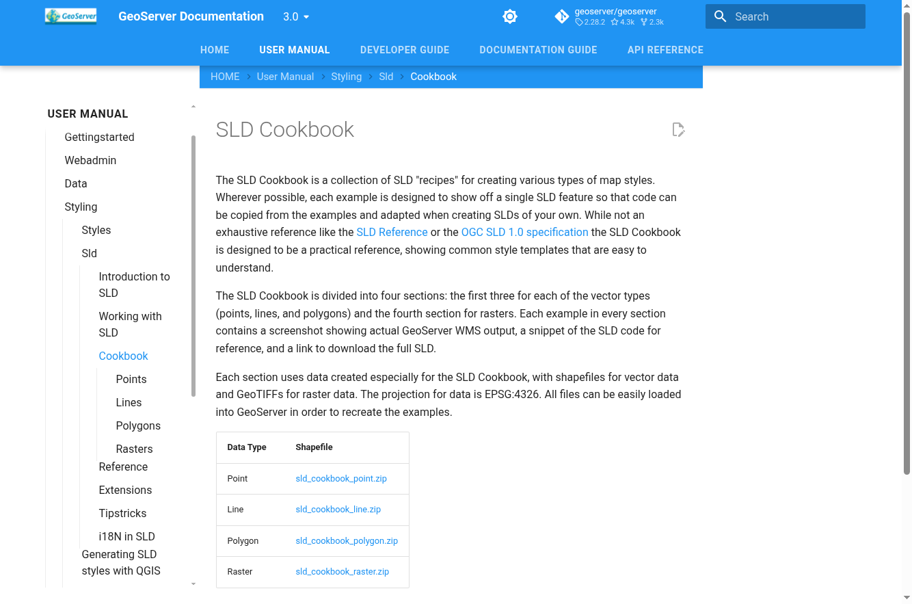
GeoServer 3 Theme
- Modernisierte Web-UI
- Verbesserte Usability & Performance
- Neues Design, aber vertraute Struktur
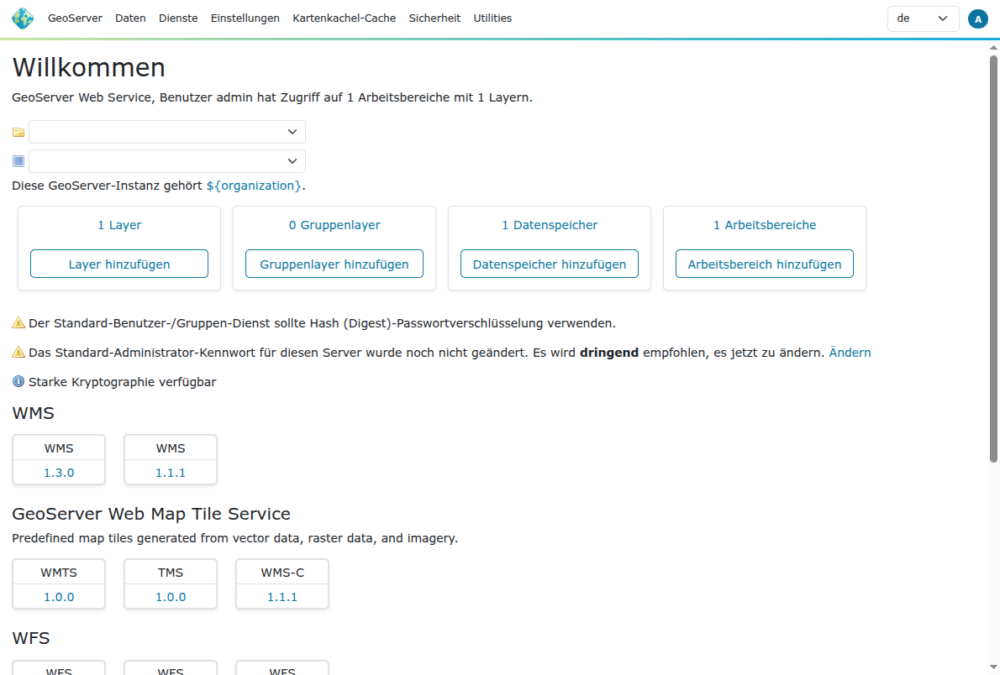
GeoServer 3 Theme
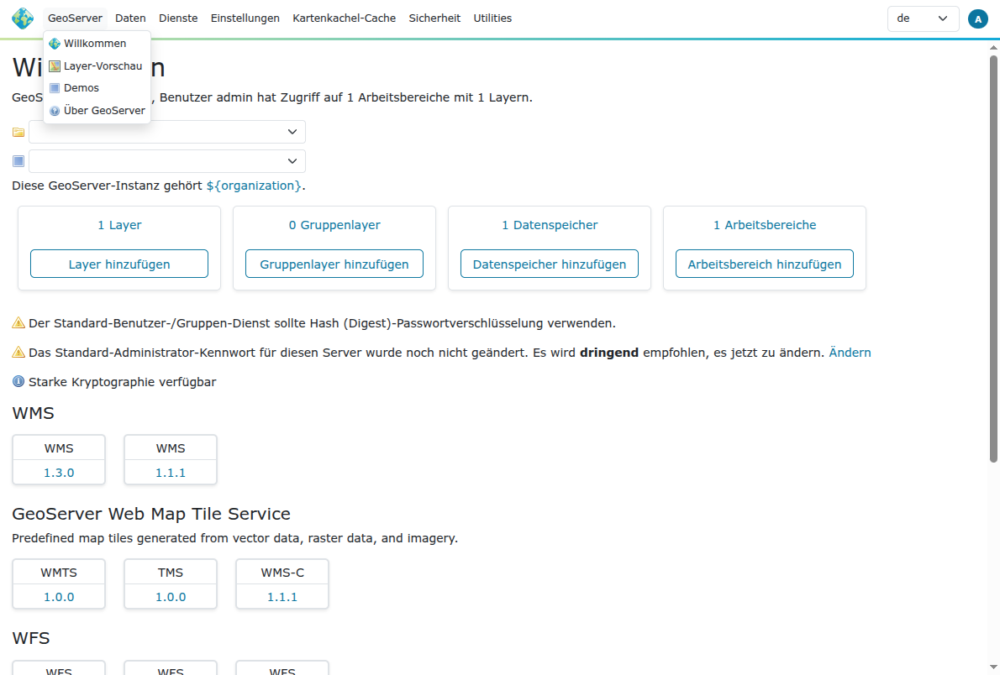
GeoServer 3 Theme
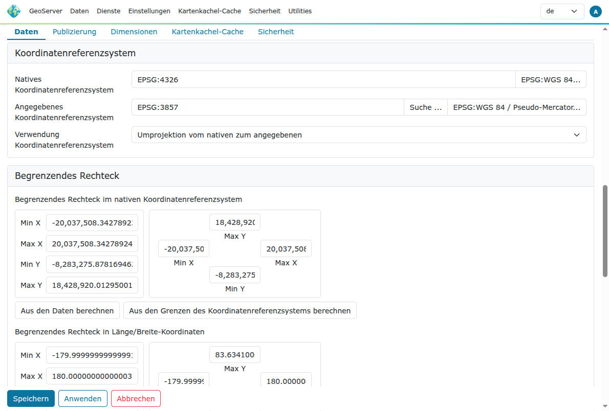
GeoServer 3 Theme
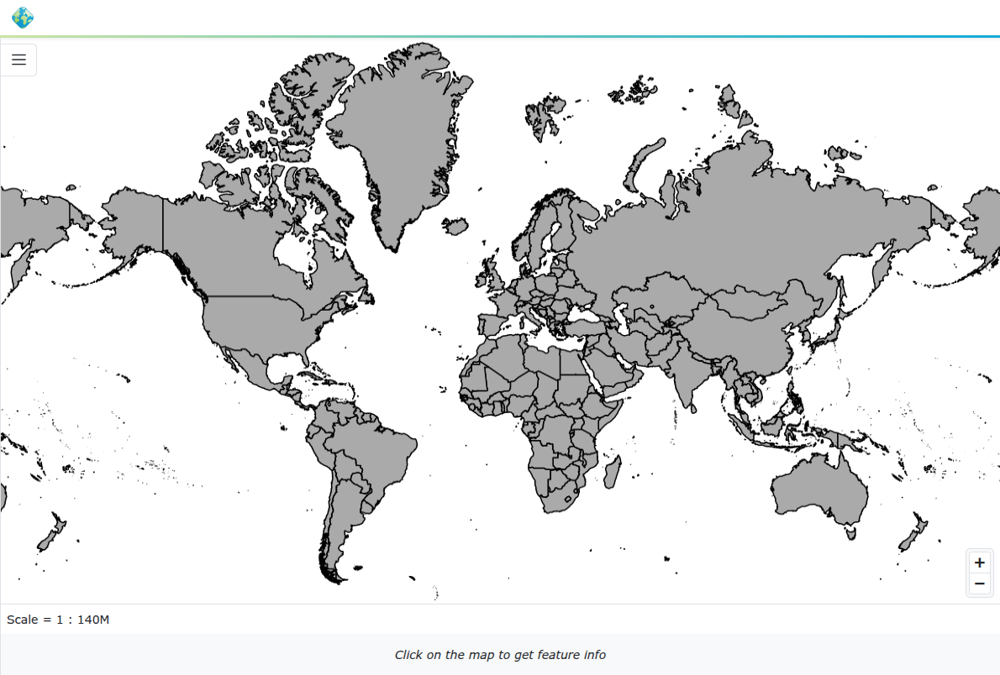
Fazit
- GeoServer 3 = notwendige Modernisierung
- Solide technische Basis für die nächsten Jahre
- Migration erfordert Vorsicht, aber:
- Data Directory bleibt kompatibel
- OpenRewrite automatisiert bei eigenem Code großen Teil
- Community-Testing läuft auf Hochtouren
- GeoServer 3 Release ist für den 15. April 2026 angekündigt
Links & Ressourcen
Vielen Dank!
Fragen?